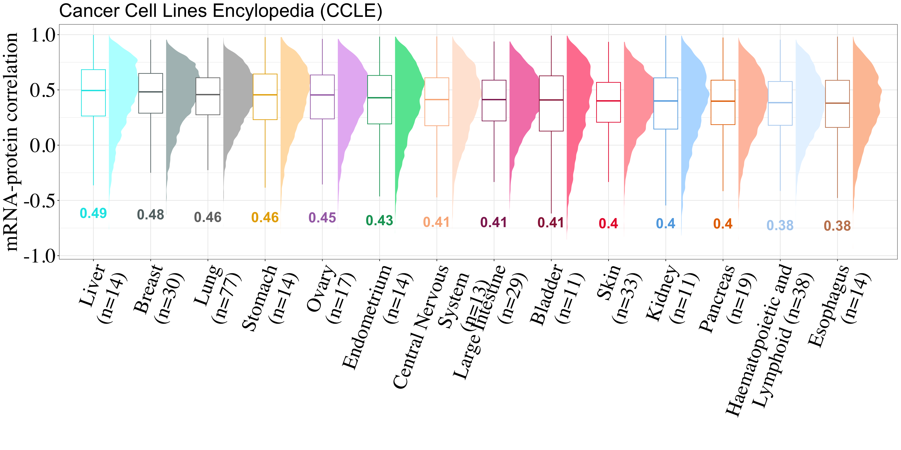

supplementary-publication-figures
urwahnawaz
2024-10-10
Last updated: 2025-06-23
Checks: 7 0
Knit directory: OnCorr/
This reproducible R Markdown analysis was created with workflowr (version 1.7.1). The Checks tab describes the reproducibility checks that were applied when the results were created. The Past versions tab lists the development history.
Great! Since the R Markdown file has been committed to the Git repository, you know the exact version of the code that produced these results.
Great job! The global environment was empty. Objects defined in the global environment can affect the analysis in your R Markdown file in unknown ways. For reproduciblity it’s best to always run the code in an empty environment.
The command set.seed(20250619) was run prior to running
the code in the R Markdown file. Setting a seed ensures that any results
that rely on randomness, e.g. subsampling or permutations, are
reproducible.
Great job! Recording the operating system, R version, and package versions is critical for reproducibility.
Nice! There were no cached chunks for this analysis, so you can be confident that you successfully produced the results during this run.
Great job! Using relative paths to the files within your workflowr project makes it easier to run your code on other machines.
Great! You are using Git for version control. Tracking code development and connecting the code version to the results is critical for reproducibility.
The results in this page were generated with repository version 51490cc. See the Past versions tab to see a history of the changes made to the R Markdown and HTML files.
Note that you need to be careful to ensure that all relevant files for
the analysis have been committed to Git prior to generating the results
(you can use wflow_publish or
wflow_git_commit). workflowr only checks the R Markdown
file, but you know if there are other scripts or data files that it
depends on. Below is the status of the Git repository when the results
were generated:
Ignored files:
Ignored: .DS_Store
Ignored: .Rproj.user/
Ignored: data/.DS_Store
Ignored: output/.DS_Store
Untracked files:
Untracked: analysis/CPTAC-data-correlations.Rmd
Untracked: data/Datasets/
Untracked: data/OncoKB/
Untracked: data/Pathways/
Untracked: data/Ranks/
Untracked: output/Other/
Untracked: output/Publication/
Untracked: output/correlations-datasets/
Unstaged changes:
Modified: analysis/_site.yml
Note that any generated files, e.g. HTML, png, CSS, etc., are not included in this status report because it is ok for generated content to have uncommitted changes.
These are the previous versions of the repository in which changes were
made to the R Markdown
(analysis/supplementary-publication-figures.Rmd) and HTML
(docs/supplementary-publication-figures.html) files. If
you’ve configured a remote Git repository (see
?wflow_git_remote), click on the hyperlinks in the table
below to view the files as they were in that past version.
| File | Version | Author | Date | Message |
|---|---|---|---|---|
| Rmd | 51490cc | Urwah Nawaz | 2025-06-23 | wflow_publish(c("analysis/supplementary-publication-figures.Rmd", |
Introduction
This notebook contains supplementary figures that will be used for the mRNA protein correlation paper.
library(ggplot2)
library(magrittr)
library(tidyverse)
library(readxl)
library(dplyr)
library(RWDataPlyr)
library(AnnotationDbi)
library(org.Hs.eg.db)
library(EnsDb.Hsapiens.v86)
library(svglite)
library(ggiraph)
library(reshape2)
library(ggvenn)
library(VennDiagram)
library(ggtext)
library(colorspace)
library(ragg)
library(msigdbr)
library(matrixStats)
library(ggpubr)library(readxl)
read_excel_allsheets <- function(filename, tibble = FALSE) {
# I prefer straight data.frames
# but if you like tidyverse tibbles (the default with read_excel)
# then just pass tibble = TRUE
sheets <- readxl::excel_sheets(filename)
x <- lapply(sheets, function(X) readxl::read_excel(filename, sheet = X))
if(!tibble) x <- lapply(x, as.data.frame)
names(x) <- sheets
x
}sample_md = read.delim("~/Documents/2023/RNA-protein-correlationx/Data/e0022_diann_051021_sample_mapping_averaged.txt")PALETTE_TTYPE = c(
"Lung"= "#007fff",
"Prostate"= "#665d1e",
"Stomach"= "#ffbf00",
"Central Nervous System"= "#fbceb1",
"Skin"= "#ff033e",
"Bladder"= "#ab274f",
"Haematopoietic and Lymphoid"= "#d5e6f7",
"Kidney"= "#7cb9e8",
"Thyroid"= "#efdecd",
"Soft Tissue"= "#8db600",
"Head and Neck"= "#e9d66b",
"Ovary"= "#b284be",
"Bone"= "#b2beb5",
"Endometrium"= "#10b36f",
"Breast"= "#6e7f80",
"Pancreas"= "#ff7e00",
"Peripheral Nervous System"= "#87a96b",
"Cervix"= "#c9ffe5",
"Large Intestine"= "#9f2b68",
"Liver"= "#00ffff",
"Vulva"= "#008000",
"Esophagus"= "#cd9575",
"Biliary Tract"= "#72a0c1",
"Other tissue"= "#a32638",
"Small Intestine"= "#9966cc",
"Placenta"= "#f19cbb",
"Testis"= "#e32636",
"Adrenal Gland"= "#3b7a57",
"Other"= "whitesmoke")Supplementary Figure 1
Supp Fig 1a
cr_correlations <- read.csv("output/correlations-datasets/correlation-tissue-cptac-linkedomics.csv", row.names = 1)
cptac_md = read.csv("output/correlations-datasets/CPTAC-sample-info-merged.csv", header=TRUE)
medians_tissue_cptac = aggregate(Correlation ~ Tissue, data = cr_correlations, FUN = median) %>%
as.data.frame() %>%
arrange(Correlation)tissue_dists= cr_correlations %>%
mutate(Label= factor(Tissue, levels = medians_tissue_cptac$Tissue)) %>%
mutate(Label = recode(Label,
"Breast" = "Breast\n(n=121)",
"Central Nervous System" = "Central Nervous\nSystem (n=99)",
"Head and Neck" = "Head and Neck\n(n=108)",
"Endometrium" = "Endometrium\n(n=95)",
"Large Intestine" = "Large Intestine\n(n=96)",
"Kidney" = "Kidney\n(n=103)",
"Pancreas" = "Pancreas\n(n=105)",
"Ovary" = "Ovary\n(n=82)",
"Lung" = "Lung\n(n=218)")) %>%
group_by(Tissue) %>%
ggplot(aes(x = fct_rev(Label), y = Correlation)) +
ggdist::stat_halfeye(
aes(color = Tissue,
fill = after_scale(lighten(color, .5))),
adjust = .5,
width = .75,
.width = 0,
justification = -.4,
point_color = NA) + theme(legend.position = "none") +
geom_boxplot(
aes(color = Tissue,
color = after_scale(darken(color, .1, space = "HLS"))),
width = .42,
outlier.shape = NA
) +
stat_summary(
geom = "text",
fun = "median",
aes(label = round(..y.., 2),
color = Tissue,
color = after_scale(darken(color, .1, space = "HLS"))),
fontface = "bold",
size = 8,
vjust = 10.5,
na.rm = TRUE
) +
scale_color_manual(values = PALETTE_TTYPE, guide = "none") +
scale_fill_manual(values = PALETTE_TTYPE, guide = "none") +
theme_bw() +
labs(y="mRNA-protein correlation",
x= "") +
theme(axis.text.x = element_text(angle=70, hjust = 1, size=32),
axis.text = element_text(color = "black",
family="serif",
size=33),
axis.title = element_text(color = "black",
family="serif",
size=33), plot.title = element_text(size=30)) + ggtitle("Clinical Proteomic Tumor Analysis Consortium (CPTAC)")
tissue_dists#ggsave(filename = "output/Publication/Figures/Supp_Fig_1A.png",height =10, width =25, plot = tissue_dists, dpi = 1200)Supp Fig 1b
sample_md_CCLE = read.csv("/Users/unawaz/Documents/2023/RNA-protein-correlationx/Data/CCLE/sample_info.csv", header=TRUE,
check.names = FALSE)Fix metadata for tissues
ccle_tissue_annot = read_excel("data/Datasets/CCLE/CCLE_tissue_names.xlsx") %>%
as.data.frame()sample_md_CCLE %<>%
mutate(Lineage = gsub("_", " ", lineage)) %>%
mutate(Lineage = str_to_title(Lineage)) %>%
left_join(ccle_tissue_annot, by = "Lineage")ccle = read.csv("output/correlations-datasets/CCLE-correlations-tissue.csv", row.names = 1)
medians_tissue_ccle = aggregate(Correlation ~ Tissue, data = ccle, FUN = median) %>%
as.data.frame() %>%
dplyr::arrange(Correlation)
tissue_dists_ccle = ccle %>%
mutate(Label= factor(Tissue, levels = medians_tissue_ccle$Tissue)) %>%
mutate(Label = recode(Label,
"Liver" = "Liver\n(n=14)",
"Breast" = "Breast\n(n=30)",
"Lubg" = "Lung\n(n=77)",
"Stomach" = "Stomach\n(n=14)",
"Ovary" = "Ovary\n(n=17)",
"Endometrium" = "Endometrium\n(n=14)",
"Central Nervous System" = "Central Nervous\nSystem\n(n=13)",
"Large Intestine" = "Large Intestine\n(n=29)",
"Bladder" = "Bladder\n(n=11)",
"Skin" = "Skin\n(n=33)",
"Esophagus" = "Esophagus\n(n=14)",
"Kidney" = "Kidney\n(n=11)",
"Pancreas" = "Pancreas\n(n=19)",
"Haematopoietic and Lymphoid" = "Haematopoietic and\nLymphoid (n=38)")) %>%
group_by(Tissue) %>%
ggplot(aes(x = fct_rev(Label), y = Correlation)) +
ggdist::stat_halfeye(
aes(color = Tissue,
fill = after_scale(lighten(color, .5))),
adjust = .5,
width = .75,
.width = 0,
justification = -.4,
point_color = NA) + theme(legend.position = "none") +
geom_boxplot(
aes(color = Tissue,
color = after_scale(darken(color, .1, space = "HLS"))),
width = .42,
outlier.shape = NA
) +
stat_summary(
geom = "text",
fun = "median",
aes(label = round(..y.., 2),
color = Tissue,
color = after_scale(darken(color, .1, space = "HLS"))),
fontface = "bold",
size = 8,
vjust = 12.5,
na.rm = TRUE
) +
scale_color_manual(values = PALETTE_TTYPE, guide = "none") +
scale_fill_manual(values = PALETTE_TTYPE, guide = "none") +
theme_bw() +
labs(y="mRNA-protein correlation",
x= "") +
theme(axis.text.x = element_text(angle=70, hjust = 1, size =32),
axis.text = element_text(color = "black",
family="serif",
size=33),
axis.title = element_text(color = "black",
family="serif",
size=33), plot.title = element_text(size=30)) + ggtitle("Cancer Cell Lines Encylopedia (CCLE)")
tissue_dists_ccle
#ggsave(filename = "output/Publication/Figures/Supp_Fig_1B.png", height =10, width =20, plot = tissue_dists_ccle, dpi = 1200)Supp Fig 1c
library(patchwork)
kegg_pathways = msigdbr(species="human", category = "C2", subcategory = "CP:KEGG") %>%
as.data.frame() %>%
dplyr::filter(gs_description %in% c("Cell cycle", "Oxidative phosphorylation",
"Ribosome", "Proteasome", "Spliceosome",
"Focal adhesion", "Apoptosis") )
lists = split(kegg_pathways, kegg_pathways$gs_description)
kegg_genes = lapply(lists , function(x){
x %<>% dplyr::select(Gene = gene_symbol)
})
pathway_genes = read_excel_allsheets("data/Pathways/Pathways-member-genes.xlsx")
pathway_genes = lapply(pathway_genes[1:10] , function(x){
x %<>% dplyr::select(Gene)
}
)
ccle_matrix = ccle %>%
pivot_wider(names_from = Tissue, values_from = Correlation) %>% as.data.frame()
correlation_per_kegg = lapply(names(kegg_genes), function(x) {
pathways = kegg_genes[[x]]$Gene
pathway_medians = ccle_matrix %>%
dplyr::filter(Protein %in% pathways) %>%
dplyr::select(-c(Protein)) %>%
summarise_all(.funs = ~median(., na.rm = TRUE)) %>%
mutate(Pathway = x)
return(pathway_medians)
})
correlation_per_kegg %<>% do.call(rbind,.)
correlation_per_pathway = lapply(names(pathway_genes), function(x) {
pathways = pathway_genes[[x]]$Gene
pathway_medians = ccle_matrix %>%
dplyr::filter(Protein %in% pathways) %>%
dplyr::select(-c(Protein)) %>%
summarise_all(.funs = ~median(., na.rm = TRUE)) %>%
mutate(Pathway = x)
return(pathway_medians)
})plot_ccle = do.call(rbind, correlation_per_pathway) %>%
dplyr::filter(Pathway %in% c("PI3K", "NOTCH", "WNT", "RTK RAS", "TGF-Beta",
"HIPPO")) %>%
rbind(correlation_per_kegg) %>%
mutate(Pathway = ifelse(Pathway == "Oxidative phosphorylation", "OXPHOS", Pathway)) %>%
dplyr::rename(Lung = Lubg) %>%
melt() %>%
mutate(Pathway = factor(Pathway, levels =
c("Ribosome", "OXPHOS",
"Proteasome", "Spliceosome", "PI3K",
"NOTCH", "Cell cycle", "Apoptosis",
"WNT", "RTK RAS", "TGF-Beta", "HIPPO",
"Focal adhesion"))) %>%
ggplot(aes(x=Pathway, y=value)) + geom_boxplot() +
theme_bw() + theme_bw() + #geom_jitter(aes(color = variable), size=4, shape = 1, stroke = 1.5) +
geom_jitter(
aes(color = variable,
#color = after_scale(darken(color, .1, space = "HLS")),
color = after_scale(desaturate(lighten(color, .25), .4))),
size=3, stroke = 1
) +
scale_color_manual(values = PALETTE_TTYPE) +
labs(y= "Median correlation",
color = "") + theme(legend.position = "top",
legend.title = element_blank(),
legend.spacing.y = unit(0, "mm"),
panel.border = element_rect(colour = "black", fill=NA),
legend.background = element_blank(),
legend.box.background = element_rect(colour = "black")) +
theme(axis.text.x = element_text( color = "black", size =16, family = "serif", hjust = 1),
axis.text.y = element_text(color = "black", size =16, family = "serif"),
axis.title = element_text(color = "black", size =16, family = "serif")) + xlab("") + coord_flip() +
labs(y= "Median mRNA-protein correlation",
color = "Tissue") + ggtitle("CCLE")
plot_ccle
#ggsave(filename = "output/Publication/Figures/Supp_Figure1c_CCLE_pathways.png", height =7, width =8, plot = plot, dpi = 1200)pathways_ccle = do.call(rbind, correlation_per_pathway) %>%
dplyr::filter(Pathway %in% c("PI3K", "NOTCH", "WNT", "RTK RAS", "TGF-Beta",
"HIPPO")) %>%
rbind(correlation_per_kegg) %>%
mutate(Pathway = ifelse(Pathway == "Oxidative phosphorylation", "OXPHOS", Pathway)) %>%
dplyr::rename(Lung = Lubg) %>%
melt() %>%
mutate(Pathway = factor(Pathway, levels =
c("Ribosome", "OXPHOS",
"Proteasome", "Spliceosome", "PI3K",
"NOTCH", "Cell cycle", "Apoptosis",
"WNT", "RTK RAS", "TGF-Beta", "HIPPO",
"Focal adhesion"))) %>%
mutate(Dataset = c("CCLE"))Pathways CPTAC
cr_correlations <- read.csv("output/correlations-datasets/correlation-tissue-cptac-linkedomics.csv", row.names = 1)
cptac_matrix = cr_correlations %>%
pivot_wider(names_from = Tissue, values_from = Correlation) %>% as.data.frame()
cptac_matrix %<>%
mutate(Protein = gsub("\\.\\d+$", "", Protein)) %>%
mutate("Gene" = mapIds(org.Hs.eg.db, keys = Protein,
keytype = "ENSEMBL", column = "SYMBOL", multiVals="first"))
correlation_per_kegg = lapply(names(kegg_genes), function(x) {
pathways = kegg_genes[[x]]$Gene
pathway_medians = cptac_matrix %>%
dplyr::filter(Gene %in% pathways) %>%
dplyr::select(-c(Gene, Protein)) %>%
summarise_all(.funs = ~median(., na.rm = TRUE)) %>%
mutate(Pathway = x)
return(pathway_medians)
})
correlation_per_kegg %<>% do.call(rbind,.)
correlation_per_pathway = lapply(names(pathway_genes), function(x) {
pathways = pathway_genes[[x]]$Gene
pathway_medians = cptac_matrix %>%
dplyr::filter(Gene %in% pathways) %>%
dplyr::select(-c(Gene, Protein)) %>%
summarise_all(.funs = ~median(., na.rm = TRUE)) %>%
mutate(Pathway = x)
return(pathway_medians)
})plot_cptac = do.call(rbind, correlation_per_pathway) %>%
dplyr::filter(Pathway %in% c("PI3K", "NOTCH", "WNT", "RTK RAS", "TGF-Beta",
"HIPPO")) %>%
rbind(correlation_per_kegg) %>%
mutate(Pathway = ifelse(Pathway == "Oxidative phosphorylation", "OXPHOS", Pathway)) %>%
melt() %>%
mutate(Pathway = factor(Pathway, levels =
c("Ribosome", "OXPHOS",
"Proteasome", "Spliceosome", "PI3K",
"NOTCH", "Cell cycle", "Apoptosis",
"WNT", "RTK RAS", "TGF-Beta", "HIPPO",
"Focal adhesion"))) %>%
ggplot(aes(x=Pathway, y=value)) + geom_boxplot() +
theme_bw() + theme_bw() + #geom_jitter(aes(color = variable), size=4, shape = 1, stroke = 1.5) +
geom_jitter(
aes(color = variable,
#color = after_scale(darken(color, .1, space = "HLS")),
color = after_scale(desaturate(lighten(color, .25), .4))),
size=3, stroke = 1
) +
scale_color_manual(values = PALETTE_TTYPE) +
labs(y= "Median correlation",
color = "") + theme(legend.position = "top",
legend.title = element_blank(),
legend.spacing.y = unit(0, "mm"),
panel.border = element_rect(colour = "black", fill=NA),
legend.background = element_blank(),
legend.box.background = element_rect(colour = "black")) +
theme(axis.text.x = element_text( color = "black", size =16, family = "serif", hjust = 1),
axis.text.y = element_text(color = "black", size =16, family = "serif"),
axis.title = element_text(color = "black", size =16, family = "serif")) + xlab("") + coord_flip() +
labs(y= "Median mRNA-protein correlation",
color = "Tissue") + ggtitle("CPTAC")
# ggsave(filename = "output/Publication/Figures/Supp_Figure_CPTAC_pathways.png", height =9, width =8, plot = plot, dpi = 1200)pathways_cptac = do.call(rbind, correlation_per_pathway) %>%
dplyr::filter(Pathway %in% c("PI3K", "NOTCH", "WNT", "RTK RAS", "TGF-Beta",
"HIPPO")) %>%
rbind(correlation_per_kegg) %>%
mutate(Pathway = ifelse(Pathway == "Oxidative phosphorylation", "OXPHOS", Pathway)) %>%
melt() %>%
mutate(Pathway = factor(Pathway, levels =
c("Ribosome", "OXPHOS",
"Proteasome", "Spliceosome", "PI3K",
"NOTCH", "Cell cycle", "Apoptosis",
"WNT", "RTK RAS", "TGF-Beta", "HIPPO",
"Focal adhesion"))) %>%
mutate(Dataset = c("CPTAC"))
full_plot = rbind( pathways_cptac,pathways_ccle) %>%
mutate(Dataset = factor(Dataset, levels = c("CPTAC", "CCLE"))) %>%
ggplot(aes(x=Pathway, y=value)) + geom_boxplot() +
theme_bw() + theme_bw() + #geom_jitter(aes(color = variable), size=4, shape = 1, stroke = 1.5) +
geom_jitter(
aes(color = variable,
#color = after_scale(darken(color, .1, space = "HLS")),
color = after_scale(desaturate(lighten(color, .25), .4))),
size=3, stroke = 1
) +
scale_color_manual(values = PALETTE_TTYPE) +
labs(y= "Median correlation",
color = "") + theme(legend.position = "bottom",
legend.spacing.y = unit(0, "mm"),
panel.border = element_rect(colour = "black", fill=NA),
legend.background = element_blank(),
legend.box.background = element_rect(colour = "black"),
legend.text = element_text(family = "serif", size=22),
legend.title = element_text(family = "serif", size=18),
strip.text = element_text(size = 20, family = "serif")) +
theme(axis.text.x = element_text( color = "black", size =25, family = "serif", hjust = 1),
axis.text.y = element_text(color = "black", size =25, family = "serif"),
axis.title = element_text(color = "black", size =25, family = "serif")) + xlab("") + coord_flip() +
labs(y= "median mRNA-protein correlation",
color = "Tissue") + facet_wrap(~Dataset)
#ggsave(filename = "output/Publication/Figures/Supp_Fig_1C.png", height =10, width =18, plot = full_plot, dpi = 1200)
#write.table(pathways_data, "output/Pathways_median_all_datasets.tsv", sep = "\t", row.names = FALSE, quote = FALSE)Supp Figure 3A
file_dir = file.path("/Users/unawaz/Documents/2023/RNA-protein-correlationx/Data/")
cptac = read.csv("output/correlations-datasets/correlation-overall-cptac-linkedomics.csv", header=TRUE)
ccle = read.csv("output/correlations-datasets/CCLE-correlations-overall.csv", header=TRUE)
correlation_overall= read.csv("output/correlations-datasets/correlation-all-nontransformed.csv",
header=TRUE, row.names = 1)ranks = read_excel("data/Ranks/1-s2.0-S2667237522001709-mmc3.xlsx", sheet=3) %>%
as.data.frame() %>%
dplyr::rename("Gene" = "...1") %>%
mutate(Bin = case_when(
between(`Aggregated Reproducibility Rank`, 0, 0.2) ~ "0 - 0.2",
between(`Aggregated Reproducibility Rank`, 0.2, 0.4) ~ "0.2 - 0.4",
between(`Aggregated Reproducibility Rank`, 0.4, 0.6) ~ "0.4 - 0.6",
between(`Aggregated Reproducibility Rank`, 0.6, 0.8) ~ "0.6 - 0.8",
between(`Aggregated Reproducibility Rank`, 0.8, 1) ~ "0.8 - 1"
)) %>%
mutate(Bin = factor(Bin, levels = c("-1 - -0.8","-0.8 - -0.6",
"-0.6 - -0.4", "-0.4 - -0.2",
"-0.2 - 0","0 - 0.2",
"0.2 - 0.4", "0.4 - 0.6",
"0.6 - 0.8",
"0.8 - 1")))
ranks_plot_cptac = cptac %>%
mutate(Protein = gsub("\\.\\d+$", "", Protein)) %>%
mutate("Gene" = mapIds(org.Hs.eg.db, keys = Protein,
keytype = "ENSEMBL", column = "SYMBOL", multiVals="first")) %>%
inner_join(ranks, by = "Gene") %>%
drop_na("Aggregated Reproducibility Rank") %>%
ggplot(aes(x=Bin, y = Correlation)) + geom_boxplot(fill="#8da9c4") + theme_bw() + labs(x="Aggregated protein reproducibility rank\n(binned)",
y="mRNA-protein correlation",
title = "CPTAC") +
# annotate("text", x = 1, y = 0.9, size=6,
#label = "paste(italic(r), \" = 0.40\")", parse = TRUE, color = "black") +
theme(axis.text.x = element_text( color = "black", size =12),
axis.text.y = element_text(color = "black", size =12),
axis.title = element_text(color = "black", size =15)) +
theme(
axis.text.y = element_text(size = 20, family = "serif", color = "black"),
axis.text.x = element_text(size = 20, family = "serif", color = "black"),
axis.title = element_text(size=20, family = "serif"),
legend.box.background = element_rect(color = "black"),
legend.text = element_text(family = "serif"),
legend.title = element_text( family = "serif"),
plot.title = element_text(family = "serif", size =20),
panel.grid.major.x = element_blank(),
legend.position = "top")
corr_plot_cptac = cptac %>%
mutate(Protein = gsub("\\.\\d+$", "", Protein)) %>%
mutate("Gene" = mapIds(org.Hs.eg.db, keys = Protein,
keytype = "ENSEMBL", column = "SYMBOL", multiVals="first")) %>%
inner_join(ranks, by = "Gene") %>%
drop_na("Aggregated Reproducibility Rank") %>%
ggplot(aes(x = `Aggregated Reproducibility Rank`, y = Correlation)) +
geom_point(size =3) + geom_smooth(method = "lm", color = "blue", fill = "lightgray", se = TRUE) +
theme_bw() + ylab("mRNA-protein correlation") +
xlab("Aggregated protein reproducibility rank") +
annotate("text", x = 0.2, y = -0.5, size = 6,
label = "paste(italic(r), \" = 0.40, \", italic(p), \" < 2.2e-16\")",
parse = TRUE, color = "red"
)+
theme(axis.text.x = element_text(size = 20, family = "serif", color = "black"),
axis.text.y = element_text(size = 20, family = "serif", color = "black"),
axis.title = element_text(size=20, family = "serif"),
legend.box.background = element_rect(color = "black"),
legend.text = element_text(family = "serif"),
legend.title = element_text( family = "serif"),
plot.title = element_text(family = "serif", size =20),
panel.grid.major.x = element_blank(),
panel.grid.major.y = element_line( size=.1 ),
legend.position = "top",
strip.text.y = element_text(
size = 16, face = "bold.italic", family = "serif"
),
strip.text.x = element_text(
size = 16, family = "serif"
))
corr_plot_cptac cptac %>%
mutate(Protein = gsub("\\.\\d+$", "", Protein)) %>%
mutate("Gene" = mapIds(org.Hs.eg.db, keys = Protein,
keytype = "ENSEMBL", column = "SYMBOL", multiVals="first")) %>%
inner_join(ranks, by = "Gene") %>%
drop_na("Aggregated Reproducibility Rank") %>%
with(cor.test(.$Correlation, .$`Aggregated Reproducibility Rank`, method = "spearman"))
Spearman's rank correlation rho
data: .$Correlation and .$`Aggregated Reproducibility Rank`
S = 1.1702e+10, p-value < 2.2e-16
alternative hypothesis: true rho is not equal to 0
sample estimates:
rho
0.3954594 ccle %>%
dplyr::rename("Gene" = "Protein") %>%
inner_join(ranks, by = "Gene") %>%
drop_na("Aggregated Reproducibility Rank") %>%
with(cor.test(.$Correlation, .$`Aggregated Reproducibility Rank`, method = "spearman"))
Spearman's rank correlation rho
data: .$Correlation and .$`Aggregated Reproducibility Rank`
S = 1.2484e+10, p-value < 2.2e-16
alternative hypothesis: true rho is not equal to 0
sample estimates:
rho
0.2948722 #ggarrange(ranks_plot_cptac,ranks_plot_ccle)
#ggsave(filename = "output/Publication/Figures/Supp_Fig_3A_upper.png", height =3.5, width =7, plot = ranks_plot_cptac, dpi = 1200)
# ggsave(filename = "output/Publication/Figures/Supp_Fig_3A_lower.png", height =3.5, width =7, plot = corr_plot_cptac , dpi = 1200)Supp Figure 3B
ranks_plot_ccle = ccle %>%
dplyr::rename("Gene" = "Protein") %>%
inner_join(ranks, by = "Gene") %>%
drop_na("Aggregated Reproducibility Rank") %>%
ggplot(aes(x=Bin, y = `Correlation`)) + geom_boxplot(fill="#8da9c4") + theme_bw() +
labs(x="Aggregated protein reproducibility rank\n(binned)",
y="mRNA-protein correlation",
title = "CCLE") +
# annotate("text", x = 1, y = 0.9, size=6,
# label = "paste(italic(r), \" = 0.30\")", parse = TRUE, color = "black") +
theme(axis.text.x = element_text( color = "black", size =12),
axis.text.y = element_text(color = "black", size =12),
axis.title = element_text(color = "black", size =15)) +
theme(
axis.text.y = element_text(size = 20, family = "serif", color = "black"),
axis.text.x = element_text(size = 20, family = "serif", color = "black"),
axis.title = element_text(size=20, family = "serif"),
legend.box.background = element_rect(color = "black"),
legend.text = element_text(family = "serif"),
legend.title = element_text( family = "serif"),
plot.title = element_text(family = "serif", size =20),
panel.grid.major.x = element_blank(),
legend.position = "top")
corr_plot_ccle = ccle %>%
dplyr::rename("Gene" = "Protein") %>%
inner_join(ranks, by = "Gene") %>%
drop_na("Aggregated Reproducibility Rank") %>%
ggplot(aes(x = `Aggregated Reproducibility Rank`, y = Correlation)) +
geom_point(size =3) + geom_smooth(method = "lm", color = "blue", fill = "lightgray", se = TRUE) +
theme_bw() + ylab("mRNA-protein correlation") +
xlab("Aggregated protein reproducibility rank") +
annotate("text", x = 0.2, y = -0.65, size = 6,
label = "paste(italic(r), \" = 0.29, \", italic(p), \" < 2.2e-16\")",
parse = TRUE, color = "red"
) +
theme(axis.text.x = element_text(size = 20, family = "serif", color = "black"),
axis.text.y = element_text(size = 20, family = "serif", color = "black"),
axis.title = element_text(size=20, family = "serif"),
legend.box.background = element_rect(color = "black"),
legend.text = element_text(family = "serif"),
legend.title = element_text( family = "serif"),
plot.title = element_text(family = "serif", size =20),
panel.grid.major.x = element_blank(),
panel.grid.major.y = element_line( size=.1 ),
legend.position = "top",
strip.text.y = element_text(
size = 16, face = "bold.italic", family = "serif"
),
strip.text.x = element_text(
size = 16, family = "serif"
))
corr_plot_ccle 
#ggsave(filename = "output/Publication/Figures/Supp_Fig_3B_upper.png", height =3.5, width =7, plot = ranks_plot_ccle , dpi = 1200)
ggsave(filename = "output/Publication/Figures/Supp_Fig_3B_lower.png", height =3.5, width =7, plot = corr_plot_ccle , dpi = 1200)Supp Figure 3C
ranks = read_excel("data/Ranks/1-s2.0-S2667237522001709-mmc3.xlsx", sheet=3) %>%
as.data.frame() %>%
dplyr::rename("Gene" = "...1") %>%
mutate(Bin = case_when(
between(`Aggregated Reproducibility Rank`, 0, 0.2) ~ "0 - 0.2",
between(`Aggregated Reproducibility Rank`, 0.2, 0.4) ~ "0.2 - 0.4",
between(`Aggregated Reproducibility Rank`, 0.4, 0.6) ~ "0.4 - 0.6",
between(`Aggregated Reproducibility Rank`, 0.6, 0.8) ~ "0.6 - 0.8",
between(`Aggregated Reproducibility Rank`, 0.8, 1) ~ "0.8 - 1"
)) %>%
mutate(Bin = factor(Bin, levels = c("-1 - -0.8","-0.8 - -0.6",
"-0.6 - -0.4", "-0.4 - -0.2",
"-0.2 - 0","0 - 0.2",
"0.2 - 0.4", "0.4 - 0.6",
"0.6 - 0.8",
"0.8 - 1")))
correlation_data_tissue = read.csv("output/correlations-datasets/correlation-tissue-nontransformed.csv", row.names = 1)
ranks_all = correlation_data_tissue %>%
inner_join(ranks, by = "Gene")cr_correlations <- read.csv("output/correlations-datasets/correlation-tissue-cptac-linkedomics.csv", row.names = 1) %>%
mutate(Protein = gsub("\\.\\d+$", "", Protein)) %>%
mutate("Gene" = mapIds(org.Hs.eg.db, keys = Protein,
keytype = "ENSEMBL", column = "SYMBOL", multiVals="first"))
ccle = read.csv("output/correlations-datasets/CCLE-correlations-tissue.csv", row.names = 1)cdk4 = ranks_all %>%
ggplot(aes(Correlation)) +
geom_density(data=ranks_all, color="darkgrey", size = 1) +
geom_density(data=dplyr::filter(cr_correlations, Gene == "CDK4"), color="#e3a3b3", size = 1.5, lty ="dashed", alpha = 0.5) +
geom_density(data=dplyr::filter(ccle, Protein == "CDK4"), color="#6e0b24", size = 1.5, lty ="dotted", alpha =0.5) +
geom_density(data=dplyr::filter(ranks_all, Gene == "CDK4"), color="#fb6f92", size = 2) +
theme_classic() + labs(x= "mRNA-protein correlation",
y= "Density",
title = "CDK4") +
theme(
axis.text = element_text(color = "black", size = 25, family = "serif", face = "plain"),
axis.title = element_text(color = "black", size = 25, family = "serif", face = "plain"),
title = element_text(color = "black", size = 25, family = "serif", face = "bold")
)
cdk4 
ggsave(plot = cdk4, filename = "output/Publication/Figures/CDK4-dist.png", height = 7, width =7, dpi=1200)Supp Figure 2a
clusters = read.csv("output/Publication/Data/clusters.csv", row.names = 1) %>%
mutate(Dataset= "ProCan-DepMapSanger") %>%
drop_na(Cluster)
ccle = read.csv("output/correlations-datasets/CCLE-correlations-tissue.csv", row.names = 1)
cptac_dist = cr_correlations %>%
mutate(Protein = gsub("\\.\\d+$", "", Protein)) %>%
mutate("Gene" = mapIds(org.Hs.eg.db, keys = Protein,
keytype = "ENSEMBL", column = "SYMBOL", multiVals="first")) %>%
dplyr::filter(Gene %in% clusters$Gene) %>%
left_join(clusters %>%
dplyr::select(Gene, Cluster), by = "Gene") %>%
mutate(Dataset= c("Clinical Proteomic Tumor Analysis Consortium (CPTAC)")) %>%
distinct() %>%
dplyr::select(-Tissue, -Protein) %>%
dplyr::select(Gene,Cluster, Correlation, ,Dataset) %>%
rbind(clusters %>%
dplyr::select(Gene, Cluster, Correlation,Dataset )) %>% as.data.frame() %>%
ggplot(aes(x=Correlation, fill = Dataset)) +
geom_histogram(color="black") + theme_bw() +
facet_grid(rows = vars(Cluster), scales = "free_y") +
scale_fill_manual(values = c("Clinical Proteomic Tumor Analysis Consortium (CPTAC)" = "#f07167",
"ProCan-DepMapSanger" = "#3d405b")) + ylab("Number of Proteins") +
theme(legend.position = "top",
legend.spacing.y = unit(0, "mm"),
panel.border = element_rect(colour = "black", fill=NA),
legend.background = element_blank(),
legend.box.background = element_rect(colour = "black")) +
theme(axis.text.x = element_text( color = "black", size =16, family = "serif", hjust = 1),
axis.text.y = element_text(color = "black", size =16, family = "serif"),
axis.title = element_text(color = "black", size =16, family = "serif"),
strip.text = element_text(size = 14),
legend.position = "top",
legend.text = element_text(size = 12, family = "serif"),
legend.title = element_blank()) + xlab("mRNA-protein correlation")
cptac_distggsave(plot = cptac_dist , filename = "output/Publication/Figures/CPTAC_clusters_Supp_Fig_2a.png",
height = 8, width = 7, dpi = 1200)Supp Figure 2b
ccle_dist= ccle %>%
dplyr::rename(Gene = Protein) %>%
dplyr::filter(Gene %in% clusters$Gene) %>%
left_join(clusters %>%
dplyr::select(Gene, Cluster), by = "Gene") %>%
mutate(Dataset= c("Cancer Cell Line Encyclopedia (CCLE)")) %>%
distinct() %>%
dplyr::select(Gene, Correlation, Cluster, Dataset) %>%
rbind(clusters %>%
dplyr::select(Gene, Cluster, Correlation,Dataset )) %>% as.data.frame() %>%
ggplot(aes(x=Correlation, fill = Dataset)) +
geom_histogram(color="black") + theme_bw() +
facet_grid(rows = vars(Cluster), scales = "free_y") +
scale_fill_manual(values = c("Cancer Cell Line Encyclopedia (CCLE)" = "#83c5be",
"ProCan-DepMapSanger" = "#3d405b")) +
ylab("Number of Proteins") +
theme(legend.position = "top",
legend.title = element_blank(),
legend.spacing.y = unit(0, "mm"),
panel.border = element_rect(colour = "black", fill=NA),
legend.background = element_blank(),
legend.box.background = element_rect(colour = "black")) +
theme(axis.text.x = element_text( color = "black", size =16, family = "serif", hjust = 1),
axis.text.y = element_text(color = "black", size =16, family = "serif"),
axis.title = element_text(color = "black", size =16, family = "serif"),
strip.text = element_text(size = 14),
legend.position = "top",
legend.text = element_text(size = 12, family = "serif")) + xlab("mRNA-protein correlation")
ggsave(plot = ccle_dist , filename = "output/Publication/Figures/CCLE_clusters_Supp_Fig_2b.png",
height = 8, width = 7, dpi = 1200) corr_scatter = ccle %>%
dplyr::rename("Gene" = "Protein") %>%
inner_join(ranks, by = "Gene") %>%
drop_na("Aggregated Reproducibility Rank") %>%
ggplot(aes(x = `Aggregated Reproducibility Rank`, y = Correlation)) +
geom_point(size =3) + geom_smooth(method = "lm", color = "blue", fill = "lightgray", se = TRUE) +
theme_bw() + xlab("mRNA-protein correlation") +
ylab("Aggregated protein reproducibility ranks") +
annotate("text", x = 0.06, y = 0.9, size=6,
label = "paste(italic(r), \" = 0.30\")", parse = TRUE, color = "black") +
theme(axis.text.x = element_text(size = 20, family = "serif", color = "black"),
axis.text.y = element_text(size = 20, family = "serif", color = "black"),
axis.title = element_text(size=20, family = "serif"),
legend.box.background = element_rect(color = "black"),
legend.text = element_text(family = "serif"),
legend.title = element_text( family = "serif"),
plot.title = element_text(family = "serif", size =20),
panel.grid.major.x = element_blank(),
panel.grid.major.y = element_line( size=.1 ),
legend.position = "top",
strip.text.y = element_text(
size = 16, face = "bold.italic", family = "serif"
),
strip.text.x = element_text(
size = 16, family = "serif"
)) + ggtitle("CCLE")
ggsave(filename = "output/Publication/Figures/Supp-Figure-3A.png.png", height =6.5, width =7, plot = corr_scatter, dpi = 1200)cptac_corr = cptac %>%
mutate(Protein = gsub("\\.\\d+$", "", Protein)) %>%
mutate("Gene" = mapIds(org.Hs.eg.db, keys = Protein,
keytype = "ENSEMBL", column = "SYMBOL", multiVals="first")) %>%
inner_join(ranks, by = "Gene") %>%
drop_na("Aggregated Reproducibility Rank") %>%
ggplot(aes(x = `Aggregated Reproducibility Rank`, y = Correlation)) +
geom_point(size =3) + geom_smooth(method = "lm", color = "blue", fill = "lightgray", se = TRUE) +
theme_bw() + xlab("mRNA-protein correlation") +
ylab("Aggregated protein reproducibility ranks") +
annotate("text", x = 0.06, y = 0.9, size=6,
label = "paste(italic(r), \" = 0.40\")", parse = TRUE, color = "black") +
theme(axis.text.x = element_text(size = 20, family = "serif", color = "black"),
axis.text.y = element_text(size = 20, family = "serif", color = "black"),
axis.title = element_text(size=20, family = "serif"),
legend.box.background = element_rect(color = "black"),
legend.text = element_text(family = "serif"),
legend.title = element_text( family = "serif"),
plot.title = element_text(family = "serif", size =20),
panel.grid.major.x = element_blank(),
panel.grid.major.y = element_line( size=.1 ),
legend.position = "top",
strip.text.y = element_text(
size = 16, face = "bold.italic", family = "serif"
),
strip.text.x = element_text(
size = 16, family = "serif"
)) + ggtitle("CPTAC")
ggsave(filename = "output/Publication/Figures/Supp-Figure-3B.png", height =6.5, width =7, plot = cptac_corr , dpi = 1200)cptac %>%
mutate(Protein = gsub("\\.\\d+$", "", Protein)) %>%
mutate("Gene" = mapIds(org.Hs.eg.db, keys = Protein,
keytype = "ENSEMBL", column = "SYMBOL", multiVals="first")) %>%
inner_join(ranks, by = "Gene") %>%
drop_na("Aggregated Reproducibility Rank") %>%
with(cor.test(.$Correlation, .$`Aggregated Reproducibility Rank`, method = "spearman"))
Spearman's rank correlation rho
data: .$Correlation and .$`Aggregated Reproducibility Rank`
S = 1.1702e+10, p-value < 2.2e-16
alternative hypothesis: true rho is not equal to 0
sample estimates:
rho
0.3954594 ccle %>%
dplyr::rename("Gene" = "Protein") %>%
inner_join(ranks, by = "Gene") %>% drop_na("Aggregated Reproducibility Rank") %>%
with(cor.test(.$Correlation, .$`Aggregated Reproducibility Rank`, method = "spearman"))
Spearman's rank correlation rho
data: .$Correlation and .$`Aggregated Reproducibility Rank`
S = 3.4144e+13, p-value < 2.2e-16
alternative hypothesis: true rho is not equal to 0
sample estimates:
rho
0.3035998 ccle %>%
dplyr::rename("Gene" = "Protein") %>%
inner_join(ranks, by = "Gene") %>% drop_na("Aggregated Reproducibility Rank") %>%
with(cor.test(.$Correlation, .$`Aggregated Reproducibility Rank`, method = "spearman"))
Spearman's rank correlation rho
data: .$Correlation and .$`Aggregated Reproducibility Rank`
S = 3.4144e+13, p-value < 2.2e-16
alternative hypothesis: true rho is not equal to 0
sample estimates:
rho
0.3035998 ccle %>%
dplyr::rename("Gene" = "Protein") %>%
inner_join(ranks, by = "Gene") %>%
drop_na("Aggregated Reproducibility Rank") %>%
ggplot(aes(x= `Aggregated Reproducibility Rank`, y = `Correlation`)) + geom_point(fill="#8da9c4") + theme_bw() +
labs(x="Aggregated protein ranks (bins)",
y="mRNA-protein correlation",
title = "CCLE")
ccle %>%
dplyr::rename("Gene" = "Protein") %>%
inner_join(ranks, by = "Gene") %>%
drop_na("Aggregated Reproducibility Rank") %>%
ggscatter(.,x="Correlation", y ="Aggregated Reproducibility Rank", cor.coef = TRUE, add = "reg.line",
conf.int = TRUE, add.params = list(color = "blue",
fill = "lightgray"))
Supp Figure 3D
file_dir = file.path("/Users/unawaz/Documents/2023/RNA-protein-correlationx/Data/")
data = list()
## Metadata
data$sample_md = read.delim("~/Documents/2023/RNA-protein-correlationx/Data/e0022_diann_051021_sample_mapping_averaged.txt")
data$sample_md_rep = read.table(file.path(file_dir, "e0022_diann_051021_sample_mapping_replicates.txt"), header=TRUE, sep = "\t")
data$prt_mtx = read.delim(file.path(file_dir, "e0022_diann_051021_working_matrix_averaged.txt"),
header = TRUE, fill = TRUE, check.names = FALSE)
data$rna_mtx = read.delim(gzfile(file.path(file_dir, "rnaseq_voom.csv.gz")), header = TRUE,
fill = TRUE, sep = ",",
row.names = 1, check.names = FALSE) library(ggbeeswarm)
cdk4_swarm = data$rna_mtx %>%
t() %>%
as.data.frame() %>%
dplyr::select("CDK4") %>%
scale() %>%
as.data.frame() %>%
mutate(Outlier = ifelse(CDK4 > 3, "Yes", "No")) %>%
rownames_to_column("SIDM") %>%
left_join(data$rna_mtx %>%
t() %>%
as.data.frame() %>%
dplyr::select("RNA" = "CDK4") %>%
rownames_to_column("SIDM"), by = "SIDM") %>%
ggplot(aes(y = RNA, x='', color = Outlier)) +
geom_beeswarm(cex=3, size=3) +
scale_color_manual(values = c("No" = "#8d99ae",
"Yes" = "#bc4749")) +
theme(legend.position = "top") + theme_bw() +
theme(axis.text.x = element_text(size = 20, family = "serif", color = "black"),
axis.text.y = element_text(size = 20, family = "serif", color = "black"),
axis.title = element_text(size=20, family = "serif"),
legend.box.background = element_rect(color = "black"),
legend.text = element_text(family = "serif", size=20),
legend.title = element_text( family = "serif", size =20),
plot.title = element_text(family = "serif", size =20),
panel.grid.major.x = element_blank(),
panel.grid.major.y = element_line( size=.1 ),
legend.position = "top",
strip.text.y = element_text(
size = 10, face = "bold.italic", family = "serif"
),
strip.text.x = element_text(
size = 10, family = "serif"
)) + ggtitle("CDK4") + xlab("Samples") + ylab("RNA expression") + labs(color = "Outlier in RNA-seq")
cdk4_swarm
ggsave(filename = "output/Publication/Figures/Supp-Fig_3D.png",height = 6, width = 6, plot = cdk4_swarm, dpi = 1200 )cdk4 = data$rna_mtx %>%
t() %>%
as.data.frame() %>%
dplyr::select("CDK4") %>%
scale() %>%
as.data.frame() %>%
mutate(Outlier = ifelse(CDK4 > 3, "Yes", "No")) %>%
rownames_to_column("SIDM") %>%
left_join(data$rna_mtx %>%
t() %>%
as.data.frame() %>%
dplyr::select("RNA" = "CDK4") %>%
rownames_to_column("SIDM"), by = "SIDM") %>%
left_join(data$prt_mtx %>%
mutate(Project_Identifier = gsub(";.*", "", Project_Identifier)) %>%
column_to_rownames("Project_Identifier") %>%
t() %>%
as.data.frame() %>%
rownames_to_column("Protein") %>%
mutate("Protein_name" = gsub(";.*", "", Protein)) %>%
mutate("Gene" = mapIds(org.Hs.eg.db, keys = Protein_name,
keytype = "UNIPROT", column = "SYMBOL", multiVals="first")) %>%
dplyr::select(-c(Protein_name, Protein)) %>%
dplyr::filter(Gene == "CDK4") %>%
column_to_rownames("Gene") %>%
melt() %>% set_colnames(c("SIDM", "Protein"))) %>%
ggplot(aes(x=RNA, y =Protein, color = Outlier)) + geom_point(size = 3.5) + theme_bw() +
scale_color_manual(values = c("No" = "#8d99ae",
"Yes" = "#bc4749")) +
theme(legend.position = "top") +
theme(axis.text.x = element_text(size = 20, family = "serif", color = "black"),
axis.text.y = element_text(size = 20, family = "serif", color = "black"),
axis.title = element_text(size=20, family = "serif"),
legend.box.background = element_rect(color = "black"),
legend.text = element_text(family = "serif"),
legend.title = element_text( family = "serif"),
plot.title = element_text(family = "serif", size =20),
panel.grid.major.x = element_blank(),
panel.grid.major.y = element_line( size=.1 ),
legend.position = "none",
strip.text.y = element_text(
size = 10, face = "bold.italic", family = "serif"
),
strip.text.x = element_text(
size = 10, family = "serif"
)) + ggtitle("CDK4") + labs(y = "Protein abundance",
x = "RNA expression")
cdk4
ggsave(filename = "output/Publication/Figures/cdk4-rna-prt.png",height = 6, width = 6, plot = cdk4, dpi = 1200 )cdk4_prt_swarm = data$rna_mtx %>%
t() %>%
as.data.frame() %>%
dplyr::select("CDK4") %>%
scale() %>%
as.data.frame() %>%
mutate(Outlier = ifelse(CDK4 > 3, "Yes", "No")) %>%
rownames_to_column("SIDM") %>%
left_join(data$rna_mtx %>%
t() %>%
as.data.frame() %>%
dplyr::select("RNA" = "CDK4") %>%
rownames_to_column("SIDM"), by = "SIDM") %>%
left_join(data$prt_mtx %>%
mutate(Project_Identifier = gsub(";.*", "", Project_Identifier)) %>%
column_to_rownames("Project_Identifier") %>%
t() %>%
as.data.frame() %>%
rownames_to_column("Protein") %>%
mutate("Protein_name" = gsub(";.*", "", Protein)) %>%
mutate("Gene" = mapIds(org.Hs.eg.db, keys = Protein_name,
keytype = "UNIPROT", column = "SYMBOL", multiVals="first")) %>%
dplyr::select(-c(Protein_name, Protein)) %>%
dplyr::filter(Gene == "CDK4") %>%
column_to_rownames("Gene") %>%
melt() %>% set_colnames(c("SIDM", "Protein"))) %>%
ggplot(aes(y = Protein, x='', color = Outlier)) +
geom_beeswarm(cex=3, size=3) +
scale_color_manual(values = c("No" = "#8d99ae",
"Yes" = "#bc4749")) +
theme(legend.position = "none") + theme_bw() +
theme(axis.text.x = element_text(size = 20, family = "serif", color = "black"),
axis.text.y = element_text(size = 20, family = "serif", color = "black"),
axis.title = element_text(size=20, family = "serif"),
legend.box.background = element_rect(color = "black"),
legend.text = element_text(family = "serif"),
legend.title = element_text( family = "serif"),
plot.title = element_text(family = "serif", size =20),
panel.grid.major.x = element_blank(),
panel.grid.major.y = element_line( size=.1 ),
legend.position = "none",
strip.text.y = element_text(
size = 10, face = "bold.italic", family = "serif"
),
strip.text.x = element_text(
size = 10, family = "serif"
)) + xlab("Samples") + ylab("Protein abundance")
cdk4_prt_swarm
ggsave(filename = "output/Publication/Figures/Supp_Fig_3D_lower.png",height = 6, width = 6, plot = cdk4_prt_swarm, dpi = 1200 )
sessionInfo()R version 4.3.3 (2024-02-29)
Platform: aarch64-apple-darwin20 (64-bit)
Running under: macOS Sonoma 14.7.5
Matrix products: default
BLAS: /Library/Frameworks/R.framework/Versions/4.3-arm64/Resources/lib/libRblas.0.dylib
LAPACK: /Library/Frameworks/R.framework/Versions/4.3-arm64/Resources/lib/libRlapack.dylib; LAPACK version 3.11.0
locale:
[1] en_US.UTF-8/en_US.UTF-8/en_US.UTF-8/C/en_US.UTF-8/en_US.UTF-8
time zone: Australia/Sydney
tzcode source: internal
attached base packages:
[1] grid stats4 stats graphics grDevices utils datasets
[8] methods base
other attached packages:
[1] ggbeeswarm_0.7.2 patchwork_1.3.0
[3] ggpubr_0.6.0 matrixStats_1.5.0
[5] msigdbr_7.5.1 ragg_1.3.3
[7] colorspace_2.1-1 ggtext_0.1.2
[9] VennDiagram_1.7.3 futile.logger_1.4.3
[11] ggvenn_0.1.10 reshape2_1.4.4
[13] ggiraph_0.8.12 svglite_2.1.3
[15] EnsDb.Hsapiens.v86_2.99.0 ensembldb_2.26.0
[17] AnnotationFilter_1.26.0 GenomicFeatures_1.54.4
[19] GenomicRanges_1.54.1 GenomeInfoDb_1.38.8
[21] org.Hs.eg.db_3.18.0 AnnotationDbi_1.64.1
[23] IRanges_2.36.0 S4Vectors_0.40.2
[25] Biobase_2.62.0 BiocGenerics_0.48.1
[27] RWDataPlyr_0.6.4 readxl_1.4.3
[29] lubridate_1.9.4 forcats_1.0.0
[31] stringr_1.5.1 dplyr_1.1.4
[33] purrr_1.0.2 readr_2.1.5
[35] tidyr_1.3.1 tibble_3.2.1
[37] tidyverse_2.0.0 magrittr_2.0.3
[39] ggplot2_3.5.1 workflowr_1.7.1
loaded via a namespace (and not attached):
[1] splines_4.3.3 later_1.4.1
[3] BiocIO_1.12.0 bitops_1.0-9
[5] filelock_1.0.3 cellranger_1.1.0
[7] XML_3.99-0.18 lifecycle_1.0.4
[9] rstatix_0.7.2 rprojroot_2.0.4
[11] processx_3.8.5 lattice_0.22-5
[13] ggdist_3.3.2 backports_1.5.0
[15] sass_0.4.9 rmarkdown_2.29
[17] jquerylib_0.1.4 yaml_2.3.10
[19] httpuv_1.6.15 DBI_1.2.3
[21] abind_1.4-8 zlibbioc_1.48.2
[23] RCurl_1.98-1.16 rappdirs_0.3.3
[25] git2r_0.35.0 GenomeInfoDbData_1.2.11
[27] codetools_0.2-19 DelayedArray_0.28.0
[29] xml2_1.3.6 tidyselect_1.2.1
[31] farver_2.1.2 BiocFileCache_2.10.2
[33] GenomicAlignments_1.38.2 jsonlite_1.8.9
[35] Formula_1.2-5 systemfonts_1.1.0
[37] tools_4.3.3 progress_1.2.3
[39] Rcpp_1.0.14 glue_1.8.0
[41] SparseArray_1.2.4 xfun_0.50
[43] mgcv_1.9-1 MatrixGenerics_1.14.0
[45] distributional_0.5.0 withr_3.0.2
[47] formatR_1.14 fastmap_1.2.0
[49] callr_3.7.6 digest_0.6.37
[51] timechange_0.3.0 R6_2.5.1
[53] textshaping_0.4.1 biomaRt_2.58.2
[55] RSQLite_2.3.9 generics_0.1.3
[57] rtracklayer_1.62.0 prettyunits_1.2.0
[59] httr_1.4.7 htmlwidgets_1.6.4
[61] S4Arrays_1.2.1 whisker_0.4.1
[63] pkgconfig_2.0.3 gtable_0.3.6
[65] blob_1.2.4 XVector_0.42.0
[67] htmltools_0.5.8.1 carData_3.0-5
[69] ProtGenerics_1.34.0 scales_1.3.0
[71] png_0.1-8 knitr_1.49
[73] lambda.r_1.2.4 rstudioapi_0.17.1
[75] tzdb_0.4.0 rjson_0.2.23
[77] uuid_1.2-1 nlme_3.1-164
[79] curl_6.1.0 cachem_1.1.0
[81] vipor_0.4.7 parallel_4.3.3
[83] restfulr_0.0.15 pillar_1.10.1
[85] vctrs_0.6.5 promises_1.3.2
[87] car_3.1-3 dbplyr_2.5.0
[89] beeswarm_0.4.0 evaluate_1.0.3
[91] cli_3.6.3 compiler_4.3.3
[93] futile.options_1.0.1 Rsamtools_2.18.0
[95] rlang_1.1.4 crayon_1.5.3
[97] ggsignif_0.6.4 labeling_0.4.3
[99] ps_1.8.1 getPass_0.2-4
[101] plyr_1.8.9 fs_1.6.5
[103] stringi_1.8.4 BiocParallel_1.36.0
[105] babelgene_22.9 munsell_0.5.1
[107] Biostrings_2.70.3 lazyeval_0.2.2
[109] Matrix_1.6-5 hms_1.1.3
[111] bit64_4.5.2 KEGGREST_1.42.0
[113] SummarizedExperiment_1.32.0 gridtext_0.1.5
[115] broom_1.0.7 memoise_2.0.1
[117] bslib_0.8.0 bit_4.5.0.1